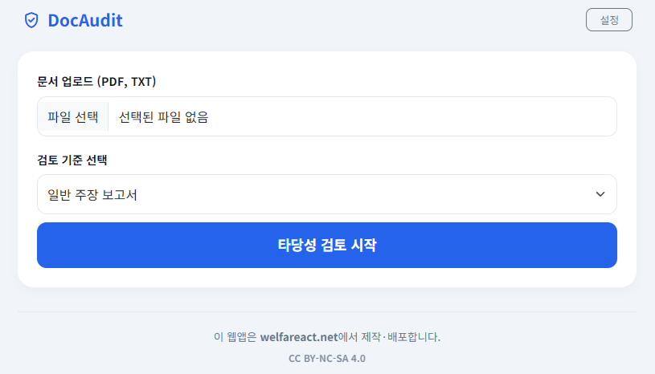

PDF나 텍스트 문서를 업로드하면 AI가 그 내용을 분석하여 사업의 타당성, 보완점, 개선 방향을 제안합니다. 사업 계획서 검토나 보고서 검수 시 전문가의 보완 의견을 받는 것처럼 활용할 수 있습니다.
📁
문서 파일 분석
PDF, TXT 등 다양한 형식의 파일을 직접 업로드하여 분석합니다.
📋
표 기반 결과 리포트
검토 항목별로 점수나 구체적인 피드백을 표 형태로 일목요연하게 제공합니다.

계획서 자동 분석 리포트 화면